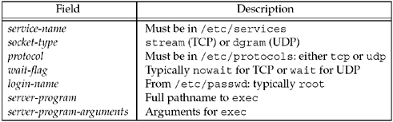
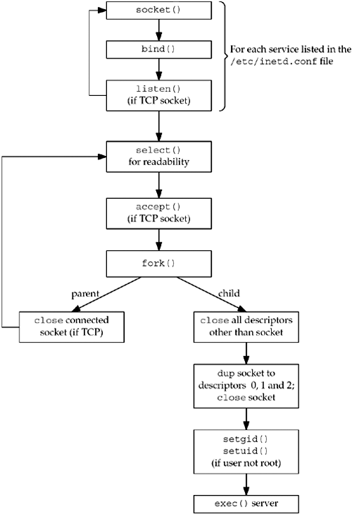
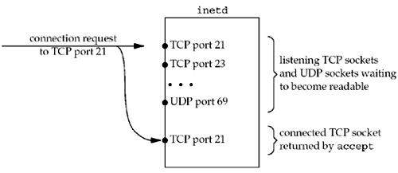
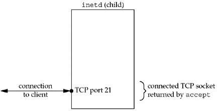
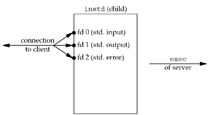

13.5 inetd Daemon
On a typical Unix system, there could be many servers in existence, just waiting for a client request to arrive. Examples are FTP, Telnet, Rlogin, TFTP, and so on. With systems before 4.3BSD, each of these services had a process associated with it. This process was started at boot-time from the file /etc/rc, and each process did nearly identical startup tasks: create a socket, bind the server's well-known port to the socket, wait for a connection (if TCP) or a datagram (if UDP), and then fork. The child process serviced the client and the parent waited for the next client request. There are two problems with this model:
All these daemons contained nearly identical startup code, first with respect to socket creation, and also with respect to becoming a daemon process (similar to our daemon_init function). Each daemon took a slot in the process table, but each daemon was asleep most of the time.
The 4.3BSD release simplified this by providing an Internet superserver: the inetd daemon. This daemon can be used by servers that use either TCP or UDP. It does not handle other protocols, such as Unix domain sockets. This daemon fixes the two problems just mentioned:
It simplifies writing daemon processes since most of the startup details are handled by inetd. This obviates the need for each server to call our daemon_init function. It allows a single process (inetd) to be waiting for incoming client requests for multiple services, instead of one process for each service. This reduces the total number of processes in the system.
The inetd process establishes itself as a daemon using the techniques that we described with our daemon_init function. It then reads and processes its configuration file, typically /etc/inetd.conf. This file specifies the services that the superserver is to handle, and what to do when a service request arrives. Each line contains the fields shown in Figure 13.6.

Some sample lines are
ftp stream tcp nowait root /usr/bin/ftpd ftpd -1
telnet stream tcp nowait root /usr/bin/telnetd telnetd
login stream tcp nowait root /usr/bin/rlogind rlogind -s
tftp dgram udp wait nobody /usr/bin/tftpd tftpd -s /tftpboot
The actual name of the server is always passed as the first argument to a program when it is execed.
This figure and the sample lines are just examples. Most vendors have added their own features to inetd. Examples are the ability to handle RPC servers, in addition to TCP and UDP servers, and the ability to handle protocols other than TCP and UDP. Also, the pathname to exec and the command-line arguments to the server obviously depend on the implementation. The wait-flag field can be a bit confusing. In general, it specifies whether the daemon started by inetd intends to take over the listening socket associated with the service. UDP services don't have separate listening and accepting sockets, and are virtually always configured as wait. TCP services could be handled either way, at the discretion of the person writing the daemon, but nowait is most common. The interaction of IPv6 with /etc/inetd.conf depends on the vendor and special attention to detail is required to get what you want. Some use a protocol of tcp6 or udp6 to indicate that an IPv6 socket should be created for a service. Some allow protocol values of tcp46 or udp46 indicate the daemon wants sockets that allow both IPv6 and IPv4 connections. These special protocol names do not typically appear in the /etc/protocols file.
A picture of what the inetd daemon does is shown in Figure 13.7.

On startup, it reads the /etc/inetd.conf file and creates a socket of the appropriate type (stream or datagram) for all the services specified in the file. The maximum number of servers that inetd can handle depends on the maximum number of descriptors that inetd can create. Each new socket is added to a descriptor set that will be used in a call to select.
bind is called for the socket, specifying the port for the server and the wildcard IP address. This TCP or UDP port number is obtained by calling getservbyname with the service-name and protocol fields from the configuration file as arguments.
For TCP sockets, listen is called so that incoming connection requests are accepted. This step is not done for datagram sockets.
After all the sockets are created, select is called to wait for any of the sockets to become readable. Recall from Section 6.3 that a listening TCP socket becomes readable when a new connection is ready to be accepted and a UDP socket becomes readable when a datagram arrives. inetd spends most of its time blocked in this call to select, waiting for a socket to be readable.
When select returns that a socket is readable, if the socket is a TCP socket and the nowait flag is given, accept is called to accept the new connection.
The inetd daemon forks and the child process handles the service request. This is similar to a standard concurrent server (Section 4.8).
The child closes all descriptors except the socket descriptor it is handling: the new connected socket returned by accept for a TCP server or the original UDP socket. The child calls dup2 three times, duplicating the socket onto descriptors 0, 1, and 2 (standard input, standard output, and standard error). The original socket descriptor is then closed. By doing this, the only descriptors that are open in the child are 0, 1, and 2. If the child reads from standard input, it is reading from the socket and anything it writes to standard output or standard error is written to the socket. The child calls getpwnam to get the password file entry for the login-name specified in the configuration file. If this field is not root, then the child becomes the specified user by executing the setgid and setuid function calls. (Since the inetd process is executing with a user ID of 0, the child process inherits this user ID across the fork, and is able to become any user that it chooses.)
The child process now does an exec to execute the appropriate server-program to handle the request, passing the arguments specified in the configuration file.
If the socket is a stream socket, the parent process must close the connected socket (like our standard concurrent server). The parent calls select again, waiting for the next socket to become readable.
If we look in more detail at the descriptor handling that is taking place, Figure 13.8 shows the descriptors in inetd when a new connection request arrives from an FTP client.

The connection request is directed to TCP port 21, but a new connected socket is created by accept.
Figure 13.9 shows the descriptors in the child, after the call to fork, after the child has closed all the descriptors except the connected socket.

The next step is for the child to duplicate the connected socket to descriptors 0, 1, and 2 and then close the connected socket. This gives us the descriptors shown in Figure 13.10.

The child then calls exec. Recall from Section 4.7 that all descriptors normally remain open across an exec, so the real server that is execed uses any of the descriptors, 0, 1, or 2, to communicate with the client. These should be the only descriptors open in the server.
The scenario we have described handles the case where the configuration file specifies nowait for the server. This is typical for all TCP services and it means that inetd need not wait for its child to terminate before accepting another connection for that service. If another connection request arrives for the same service, it is returned to the parent process as soon as it calls select again. Steps 4, 5, and 6 listed earlier are executed again, and another child process handles this new request.
Specifying the wait flag for a datagram service changes the steps done by the parent process. This flag says that inetd must wait for its child to terminate before selecting on this socket again. The following changes occur:
When fork returns in the parent, the parent saves the process ID of the child. This allows the parent to know when this specific child process terminates, by looking at the value returned by waitpid.
The parent disables the socket from future selects by using the FD_CLR macro to turn off the bit in its descriptor set. This means that the child process takes over the socket until it terminates.
When the child terminates, the parent is notified by a SIGCHLD signal, and the parent's signal handler obtains the process ID of the terminating child. It reenables select for the corresponding socket by turning on the bit in its descriptor set for this socket.
The reason that a datagram server must take over the socket until it terminates, preventing inetd from selecting on that socket for readability (awaiting another client datagram), is because there is only one socket for a datagram server, unlike a TCP server that has a listening socket and one connected socket per client. If inetd did not turn off readability for the datagram socket, and if the parent (inetd) executed before the child, then the datagram from the client would still be in the socket receive buffer, causing select to return readable again, causing inetd to fork another (unneeded) child. inetd must ignore the datagram socket until it knows that the child has read the datagram from the socket receive queue. The way that inetd knows when that child is finished with the socket is by receiving SIGCHLD, indicating that the child has terminated. We will show an example of this in Section 22.7.
The five standard Internet services that we described in Figure 2.18 are handled internally by inetd (see Exercise 13.2).
Since inetd is the process that calls accept for a TCP server, the actual server that is invoked by inetd normally calls getpeername to obtain the IP address and port number of the client. Recall Figure 4.18 where we showed that after a fork and an exec (which is what inetd does), the only way for the actual server to obtain the identify of the client is to call getpeername.
inetd is normally not used for high-volume servers, notably mail and Web servers. sendmail, for example, is normally run as a standard concurrent server, as we described in Section 4.8. In this mode, the process control cost for each client connection is just a fork, while the cost for a TCP server invoked by inetd is a fork and an exec. Web servers use a variety of techniques to minimize the process control overhead for each client connection, as we will discuss in Chapter 30.
It is now common to find an extended Internet services daemon, called xinetd, on Linux and other systems. xinetd provides the same basic function as inetd, but also includes a long list of other interesting features. Those features include options for logging, accepting or rejecting connections based on the client's address, configuring services one-per-file instead of a single monolithic configuration, and many more. It is not described further here since the basic superserver idea behind them both is the same.
 |